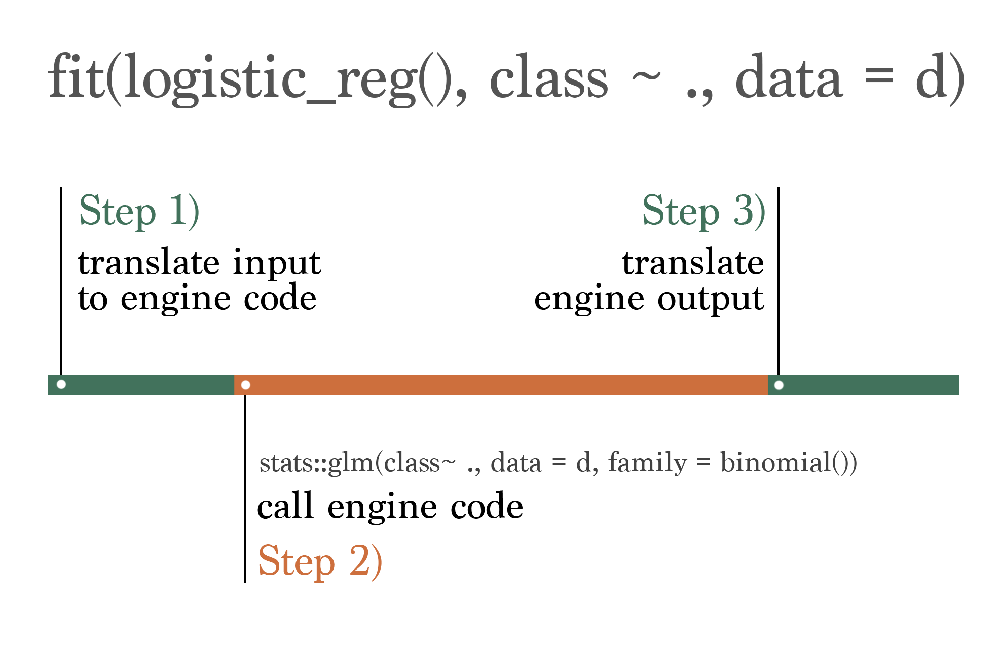
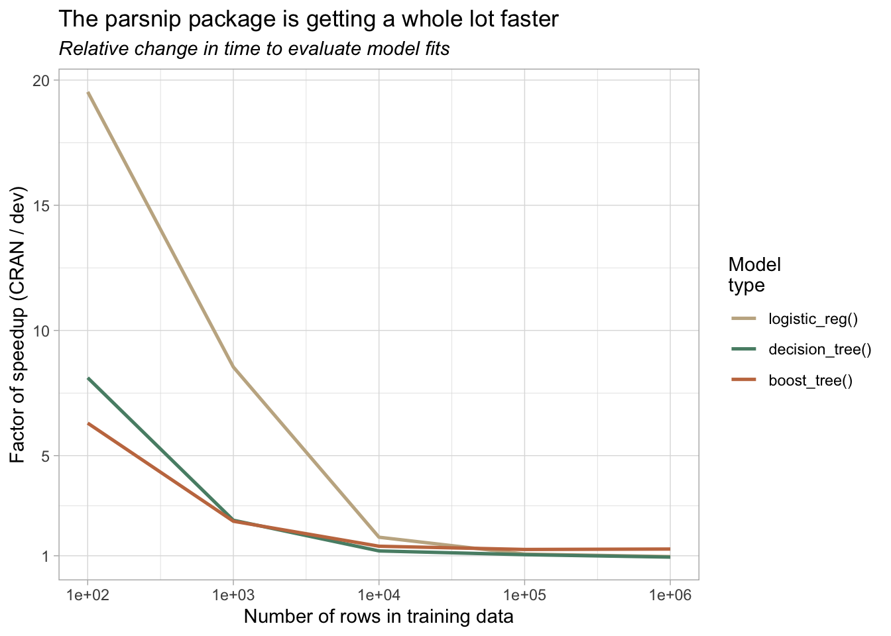
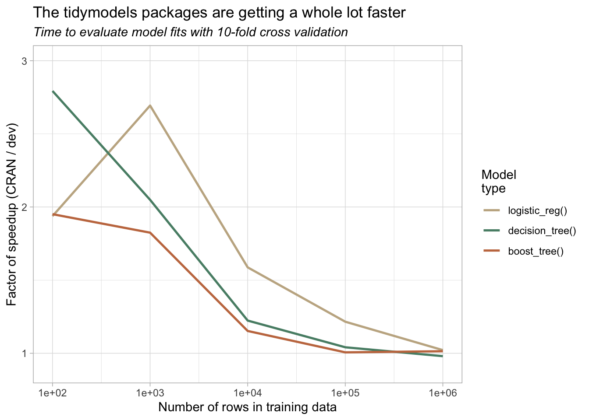

The tidymodels packages provide a consistent, expressive, and safe interface to all sorts of modeling algorithms in R.
library(tidymodels)While we develop the infrastructure that users interact with directly, under the hood, we send calls out to other people’s modeling packages—or engines—that provide the actual implementations that estimate parameters, generate predictions, etc. The process looks something like this:

When thinking about the time allotted to each of the three steps above, we refer to the “translate” steps in green as the tidymodels overhead. The time it takes to “translate” interfaces in steps 1) and 3) is within our control, while the time the modeling engine takes to do it’s thing in step 2) is not.
Let’s demonstrate with an example classification problem. Generating some random data:
d <- sim_classification(num_samples = 100)
d
## # A tibble: 100 × 16
## class two_factor_1 two_factor_2 non_linear_1 non_linear_2 non_linear_3
## <fct> <dbl> <dbl> <dbl> <dbl> <dbl>
## 1 class_1 -0.661 -0.165 0.691 0.668 0.571
## 2 class_2 -1.09 -0.846 0.749 0.0735 0.934
## 3 class_2 1.34 0.957 -0.240 0.424 0.186
## 4 class_2 -1.05 0.704 -0.500 0.0914 0.790
## 5 class_1 -2.41 -2.29 0.868 0.507 0.0417
## 6 class_2 -1.19 -1.55 -0.475 0.258 0.776
## 7 class_2 0.184 -0.960 -0.766 0.626 0.411
## 8 class_1 -1.29 -0.636 0.998 0.616 0.997
## 9 class_1 0.233 0.877 -0.0455 0.412 0.720
## 10 class_1 -2.82 -0.910 0.182 0.991 0.994
## # … with 90 more rows, and 10 more variables: linear_01 <dbl>, linear_02 <dbl>,
## # linear_03 <dbl>, linear_04 <dbl>, linear_05 <dbl>, linear_06 <dbl>,
## # linear_07 <dbl>, linear_08 <dbl>, linear_09 <dbl>, linear_10 <dbl>…we’d like to model the class using the remainder of the variables in this dataset using a logistic regression. We can using the following code to do so:
fit(logistic_reg(), class ~ ., d)
## parsnip model object
##
##
## Call: stats::glm(formula = class ~ ., family = stats::binomial, data = data)
##
## Coefficients:
## (Intercept) two_factor_1 two_factor_2 non_linear_1 non_linear_2
## 1.75608 1.94784 -1.99943 -0.84886 -0.93818
## non_linear_3 linear_01 linear_02 linear_03 linear_04
## -1.75258 0.53917 0.15238 -0.05635 -0.43106
## linear_05 linear_06 linear_07 linear_08 linear_09
## 0.20716 0.10594 -0.86227 0.11783 -0.54713
## linear_10
## -0.16726
##
## Degrees of Freedom: 99 Total (i.e. Null); 84 Residual
## Null Deviance: 138.3
## Residual Deviance: 79.97 AIC: 112The default engine for a logistic regression in tidymodels is stats::glm(). So, in the style of the above graphic, this code:
- Translates the tidymodels code, which is consistent across engines, to the format that is specific to the chosen engine. In this case, there’s not a whole lot to do: it passes the preprocessor as
formula, the data asdata, and picks afamilyofstats::binomial. - Calls
stats::glm()and collects its output. - Translates the output of
stats::glm()back into a standardized model fit object.
Again, we can control what happens in steps 1) and 3), but step 2) belongs to the stats package.
The time that steps 1) and 3) take is relatively independent of the dimensionality of the training data. That is, regardless of whether we train on one hundred or a million data points, our code (as in, the translation) takes about the same time to run. Regardless of training set size, our code pushes around small, relational data structures to determine how to correctly interface with a given engine. The time it takes to run step 2), though, depends almost completely on the size of the data. Depending on the modeling engine, modeling 10 times as much data could result in step 2) taking twice as long, or 10x as long, or 100x as long as the original fit.
So, while the absolute time allotted to steps 1) and 3) is fixed, the portion of total time to fit a model with tidymodels that is “overhead” depends on how quick the engine code itself is. How quick is a logistic regression with glm() on 100 data points?
bench::mark(
fit = stats::glm(class ~ ., family = stats::binomial, data = d)
) %>%
select(expression, median)
## # A tibble: 1 × 2
## expression median
## <bch:expr> <bch:tm>
## 1 fit 1.08msAbout a millisecond. That means that, if the tidymodels overhead is one second, we’ve made this model fit a thousand times slower!
In practice,
- The overhead here has probably hovered around something closer to a tenth of a second for the last couple years.
- Machine learning practitioners usually fit much more computationally expensive models than a logistic regression on 100 data points.
So, to fit a boosted tree model or a bagged neural network on 100,000 data points, step 2) might take a couple seconds. And steps 1) and 3) don’t care about the size of the data, so they still take a tenth of a second. No biggie—the overhead is negligible.
Because of that rationale, our development energy on the tidymodels has focused much more heavily on creating an expressive, safe, and principled interface to statistical models in R. We’ve spent a lot of time on this, and feel pretty good about where we’re at. As the collection of packages matures, we have had the development energy to consider how we may better position ourselves to support modeling approaches beyond prediction-forward machine learning.
One group of practicioners that we feel we’re quite near to supporting well are folks working on causal inference. In many ways, our tools already accommodate causal workflows, and many of the benefits of the tidymodels apply in that setting too. However, the tidymodels overhead becomes more painful in some typical causal settings—often quick model fits (think stats::lm() and stats::glm()) on small datasets (think 100-10,000 rows). Add in resampling, and, oof.
The last few weeks, I’ve been focusing on trimming down the tidymodels overhead as much as possible. Taken together with the work that the tidyverse and r-lib teams have carried out on their side, our efforts have been tremendously productive, and these changes will start hitting the CRAN versions of our packages in coming weeks.
To get a better sense of our progress, I put together some quick simulations to quantify how much a speedup we see.
parsnip
Most of this work has focused on the parsnip package, which takes care of the actual translation and calling steps. We thus see the biggest speedups there.
We’ll evaluate the speedup across unique combinations of:
- Model type: Logistic regression, decision tree, and boosted tree.
- Number of rows in training data: 100, 1,000, 10,000, 100,000, and 1,000,000.
For each pairing, we’ll benchmark how long it takes to fit the model to the data with the following code:
specs <- list(
logistic_reg = logistic_reg("classification"),
decision_tree = decision_tree("classification"),
boost_tree = boost_tree("classification")
)
benchmarks <-
bench::press(
rows = 10^(2:6),
spec = specs,
{
d <- sim_classification(rows)
bench::mark(
fit = fit(spec[[1]], class ~ ., d)
)
}
)I ran this code first with the developmental versions of our packages installed, and then a second time with the CRAN versions. We can then divide the time that the CRAN versions took by the time that the dev versions did to calculate the relative speedup. See the appendix for more information on installed versions + reproducibility.
To process the results from the developmental versions, we select a few columns and note that these results were generated with developmental versions:
dev_benchmarks_parsnip <-
benchmarks %>%
select(rows, spec, median, mem_alloc) %>%
mutate(spec = names(spec),
versions = "dev")The results look like this:
head(dev_benchmarks_parsnip)
## # A tibble: 6 × 5
## rows spec median mem_alloc versions
## <dbl> <chr> <bench_tm> <bnch_byt> <chr>
## 1 100 logistic_reg 0.001618680 1920248 dev
## 2 1000 logistic_reg 0.003882228 3866448 dev
## 3 10000 logistic_reg 0.032714679 38333328 dev
## 4 100000 logistic_reg 0.382652980 382690832 dev
## 5 1000000 logistic_reg 3.136099840 3830722416 dev
## 6 100 decision_tree 0.003887764 1394376 devAfter doing the same for the CRAN versions, we bind the dev and CRAN results together, do some cleaning up, and then divide the time to fit with CRAN versions by the time to fit with developmental versions:
benchmarks_parsnip <-
bind_rows(dev_benchmarks_parsnip, cran_benchmarks_parsnip) %>%
mutate(
spec = paste0(spec, "()"),
spec = factor(spec, levels = c("logistic_reg()", "decision_tree()", "boost_tree()")),
median = as.numeric(median)
) %>%
arrange(rows, spec, versions) %>%
group_by(rows, spec) %>%
summarize(speedup = median[1] / median[2], .groups = "drop")Plotting:
ggplot(benchmarks_parsnip) +
aes(x = rows, y = speedup, color = spec) +
geom_line(linewidth = .9) +
scale_x_log10() +
scale_y_continuous(breaks = c(1, 5, 10, 15, 20)) +
labs(
x = "Number of rows in training data",
y = "Factor of speedup (CRAN / dev)",
color = "Model\ntype",
title = "The parsnip package is getting a whole lot faster",
subtitle = "Relative change in time to evaluate model fits"
) +
theme_light() +
theme(plot.subtitle = element_text(face = "italic")) +
scale_color_manual(values = c("#c4b291", "#588d75", "#c5784f"))
Two things worth noting:
- For smaller datasets and quicker model fits, we see 20x faster model fits!
- Our changes do little to affect fit times for larger datasets—step 2) accounts for nearly all of this total time.
A natural question after seeing this graph might revolve a different ratio—fit time with dev parsnip vs. fit time with the engine itself.
Let’s benchmark that real quick. We’ll carry out the same super quick model fit on a small dataset, once with the base R interface and once with ours.
d <- sim_classification(100)
bench::mark(
engine = stats::glm(class ~ ., family = stats::binomial, data = d),
tidymodels = fit(logistic_reg(), class ~ ., data = d),
check = FALSE
) %>%
select(expression, median)
## # A tibble: 2 × 2
## expression median
## <bch:expr> <bch:tm>
## 1 engine 1.12ms
## 2 tidymodels 1.72msSo, tidymodels adds something like 50% overhead, worst-case scenario. We feel good about that.
Again, that overhead quickly disappears. With 10,000 rows:
d <- sim_classification(10000)
bench::mark(
engine = stats::glm(class ~ ., family = stats::binomial, data = d),
tidymodels = fit(logistic_reg(), class ~ ., data = d),
iterations = 100, check = FALSE
) %>%
select(expression, median)
## # A tibble: 2 × 2
## expression median
## <bch:expr> <bch:tm>
## 1 engine 26.7ms
## 2 tidymodels 27.1msZoom zoom!
tidymodels
In reality, the whole game of statistical modeling involves much more than a single model fit. Resampling model fits, generating predictions from them, calculating performance metrics based on those predictions, and all of the other intricacies of interactive modeling take lots of time, and we’ve worked on optimizing those steps too.
The following benchmarks are just like those above, except in this example, we resample the logistic regression model with 10-fold cross validation. Replacing fit() with fit_resamples() and switching out the data d for its folds:
benchmarks <-
bench::press(
rows = 10^(2:6),
spec = specs,
{
d <- sim_classification(rows)
folds <- vfold_cv(d)
bench::mark(
fit = fit_resamples(spec[[1]], class ~ ., folds)
)
}
)Tidying up with the same steps and then plotting:

Again, we see major speedups for smaller datasets, and the effect gradually disappears with larger ones as engine fit time trumps our overhead.
The same sort of benchmark I appended to the last section, where I compare “just the engine fit” to our wrapper, would be quite a bit more involved here. The line for what constitutes “overhead” vs “implementation” is a bit harder to draw, as we implement code for resampling data, computing performance metrics, etc. ourselves. The big ideas here are:
- We’ve addressed obvious slowdowns in resample evaluation code, and
- Users can expect further speedups in coming months, but, again,
- With larger dataset sizes, model fit and prediction take up increasingly large proportions of the total evaluation time.
Appendix
I used the following code to install CRAN versions on Wednesday, March 22, 2023. The renv snapshot is saved as cran_pkgs.lock.
pak::pkg_install(c(
c("parsnip", "dials", "recipes", "workflows",
"yardstick", "rsample", "hardhat", "broom", "tune"),
c("dplyr", "tibble", "purrr", "tidyr"),
c("rlang", "tidyselect", "vctrs")
))
renv::snapshot(lockfile = "cran_pkgs.lock")Similarly, for dev_pkgs.lock:
pak::pkg_install(c(
paste0("tidymodels/", c("parsnip", "dials", "recipes", "workflows",
"yardstick", "rsample", "hardhat", "broom", "tune")),
paste0("tidyverse/", c("dplyr", "tibble", "purrr", "tidyr")),
paste0("r-lib/", c("rlang", "tidyselect", "vctrs"))
))
renv::snapshot(lockfile = "dev_pkgs.lock")Note that the “CRAN” packages include dplyr v1.1.0 rather than v1.1.1, even though v1.1.1 was on CRAN by the time I ran these simulations. Folks on the tidyverse and r-lib teams (hi, Davis and Lionel!) have been super receptive and helpful in addressing performance hitches that contributed to our overhead, and dplyr 1.1.1 contains a good few changes made with an eye for helping our efforts here. Thanks, yall. So, for a “before” benchmark that better represents where we started from, I use dplyr v1.1.0.